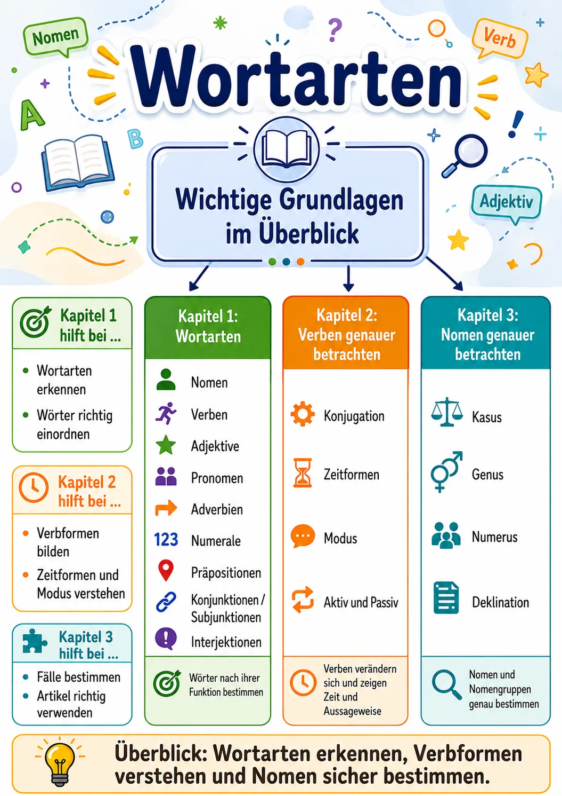

Wortarten, Verbformen und Nomen sicher bestimmen
Diese Lernumgebung führt Schritt für Schritt durch die wichtigsten Grundlagen. Jede Einheit verbindet eine Infografik, kurze Erklärungen, Beispiele und einen Mini-Check.
Wortartenerkennen und unterscheiden
Verbengenauer betrachten
Nomen und Nomengruppenbestimmen
Teste dein WissenWissen im Abschlusstest überprüfen

Teillernziele
- Ich kann die wichtigsten Wortarten benennen und voneinander unterscheiden.
- Ich kann Nomen erkennen und mithilfe von Artikelprobe, Großschreibung und Bedeutung bestimmen.
- Ich kann Verben als Tätigkeits-, Vorgangs- oder Zustandswörter erkennen.
- Ich kann Adjektive erkennen und ihre Funktion als Eigenschaftswörter erklären.
- Ich kann Pronomen als Stellvertreter oder Begleiter von Nomen bestimmen.
- Ich kann Adverbien nach Ort, Zeit, Grund und Art und Weise unterscheiden.
- Ich kann Numerale/Zahlwörter erkennen und einfachen Gruppen wie Kardinalzahl, Ordinalzahl oder Bruchzahl zuordnen.
- Ich kann Präpositionen erkennen und erklären, dass sie häufig einen bestimmten Kasus verlangen.
- Ich kann Konjunktionen und Subjunktionen unterscheiden und ihre Funktion beim Verbinden von Sätzen erklären.
- Ich kann mein Wissen zu den Wortarten mithilfe interaktiver Aufgaben selbstständig überprüfen und verbessern.